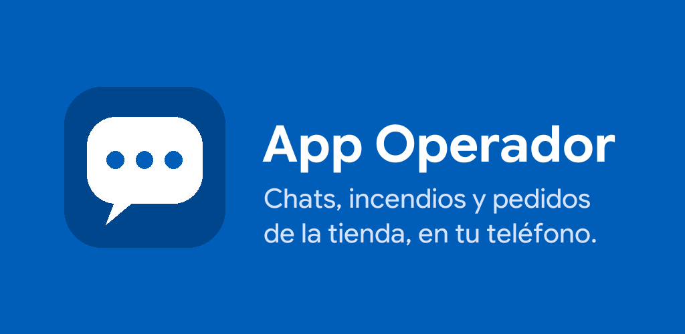
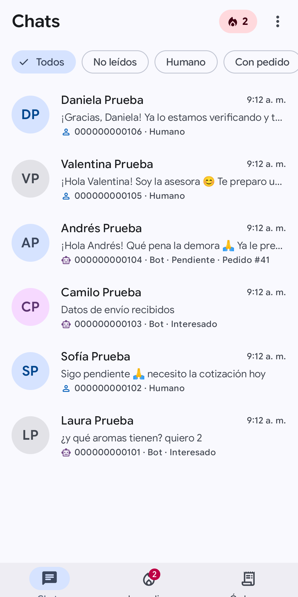
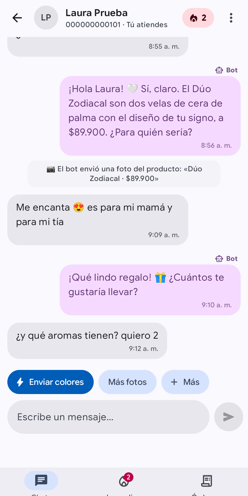

App Operador · Android · guía para la primera publicación
Publicar la app en Google Play, paso a paso
Esta guía no da nada por sabido. Cada paso dice qué hacer, quién lo hace y dónde está la página oficial de Google o de AWS que lo respalda; todas se revisaron el 1 de octubre de 2026. Marca las casillas a medida que avanzas: tu progreso queda guardado en este navegador.
0 de 0 pasos
La ruta recomendada
La app es interna: la usan menos de 20 personas del equipo y entran con una cuenta que crea el administrador. Por eso la ruta más simple es:
Cuenta de desarrollador de tipo Organización (pago único de US$25).
Distribución por «prueba interna»: hasta 100 personas por lista de emails, la versión llega en minutos y puede no pasar por la revisión normal. No es pública: solo la ven los emails que agregues.
Producción pública solo si algún día hace falta. La ficha y los formularios ya quedan preparados.
Qué ya está hecho
App lista para release: firma configurable, versión 1.0.0 y una revisión que frena el paquete si falta algo.
«Cerrar sesión» que revoca la sesión y borra los datos del teléfono, y enlace a la política de privacidad.
La dirección del servidor no va fija en la app: la app la lee de una configuración publicada en el CloudFront del dashboard. Si la IP cambia, no hay que publicar otra versión.
Ícono, gráfico de funciones, 6 capturas, textos de la ficha, respuestas de seguridad de datos y borrador de la política de privacidad, en android_operator/release/.
Lo que vas a subir
Todo está en android_operator/release/play-store/, con el tamaño y el formato que pide Google. Las capturas usan datos de prueba.
Ícono 512×512

Gráfico de funciones 1024×500

Captura: bandeja

Captura: chat
Empieza hoy por el paso 1. El número D-U-N-S que pide la cuenta de organización es gratis pero puede tardar hasta 30 días. Todo lo demás se puede preparar mientras llega.
Fase A · lo que puedes empezar hoy
Trámites y piezas que tardan
Pide el número D-U-N-S de la empresa
Lo haces túHasta 30 días
El D-U-N-S es un número de 9 dígitos que asigna Dun & Bradstreet a cada empresa. Google lo exige para crear una cuenta de organización, y sin él no deja crearla. Es gratis.
Abre la página oficial de Google sobre la información que pide cada tipo de cuenta (enlace abajo). En la sección de organización está el enlace para buscar o pedir el D-U-N-S.
Busca primero si la empresa ya tiene uno. Si no, pídelo con la razón social, el NIT y la dirección exactamente como están registrados: Google compara esos datos con los de tu cuenta.
Si Dun & Bradstreet no atiende a Colombia por esa vía, Google indica escribir a su soporte para verificar la organización de otra forma.
¿No quieres esperar? Una cuenta personal no pide D-U-N-S y también puede usar la prueba interna. Se puede pasar de personal a organización después, pero no al revés. Para llegar a producción pública, una cuenta personal nueva necesita una prueba cerrada con al menos 12 personas durante 14 días seguidos.
Publica la política de privacidad en una URL pública
Lo haces túBorrador listo1 hora
Google Play exige una política de privacidad para toda app: en la ficha de Play Console y dentro de la app. Tiene que estar en una URL activa y pública, no puede ser un PDF ni un documento que otros puedan editar, y debe decir quién es el contacto, qué datos se usan, cómo se protegen y cuánto tiempo se guardan.
Abre android_operator/release/politica-de-privacidad.html y completa todo lo marcado [COMPLETAR]: razón social, NIT, dirección, email de contacto y plazos. Que lo revise quien lleva lo legal en la empresa.
Publícala donde la empresa ya tenga web. Si no tiene, sirve un sitio gratis de Google Sites: crea una página, pega el texto, y al publicar elige que sea visible para todo el mundo. Quien la vea no podrá editarla.
Abre la URL en una ventana privada del navegador para confirmar que se ve sin iniciar sesión. Guárdala: la usas en los pasos 8 y 12.
Agrégala también a la configuración del servidor. En infra/terraform/platform/tenants.auto.tfvars, dentro de hubara, agrega mobile = { privacy_url = "https://LA_URL" }. La app la toma de ahí, así que si algún día cambia no hay que publicar otra versión. El cambio se aplica con Terraform; pídeselo a quien lo maneje o hazlo en el paso 4.
Google firma la app que se instala en los teléfonos con una clave que guarda él (se llama Play App Signing y es obligatorio). Tú solo necesitas una clave de subida: un archivo .jks con el que firmas el paquete antes de subirlo, para que Google sepa que eres tú. Si la pierdes, se puede reemplazar pidiéndoselo a Google, pero toma tiempo: guárdala bien.
En la Mac, en una terminal, crea la clave. Te pedirá una contraseña (elige una larga y anótala en tu gestor de contraseñas) y tus datos:
También se puede desde Android Studio: Build > Generate Signed Bundle / APK > Android App Bundle > Create new.
Guarda una copia del archivo .jks y de la contraseña en un segundo lugar seguro (por ejemplo, el gestor de contraseñas de la empresa). Nunca lo subas al repositorio: es público.
Dile a Gradle dónde está, en ~/.gradle/gradle.properties (es de tu usuario, no del repo). Créalo si no existe:
La app usa el mismo inicio de sesión de Cognito que el dashboard y la misma API. No hace falta tocar Terraform.
Mergea el PR #385 y comprueba que la API móvil quedó arriba
Lo apruebas tú30 minutos de deploy
Cuando el check «QA emulador — App Operador» esté verde, mergea el PR #385. El workflow de deploy del backend arranca solo y reconstruye la API y los workers.
Al terminar, comprueba que la ruta existe y pide login (debe responder 401; un 404 quiere decir que el deploy no llegó):
Si algún día cambia la IP del servidor: cambia api_url en infra/terraform/platform/tenants.auto.tfvars, aplica Terraform y corre el deploy del dashboard (workflow «frontend-deploy»). El dashboard y la app pasan solos al servidor nuevo; la app lo nota la próxima vez que se abre. No hay que publicar otra versión. Un dominio propio para la API sigue siendo recomendable, pero ya no bloquea.
Crea los usuarios de los operadores en Cognito
Lo haces tú5 minutos por persona
Nadie se registra desde la app: el administrador crea cada cuenta. El usuario recibe una contraseña temporal y la app le pide una nueva la primera vez (mínimo 12 caracteres, con símbolos).
En la consola de AWS, abre Amazon Cognito > User pools > agencyhubara-hubara > Users > Create user.
Usuario = el email del operador. Elige enviar la invitación por email y genera o escribe una contraseña temporal.
Repite para cada operador. Si algún día pasas a prueba cerrada o producción, crea además el usuario para la revisión de Google (paso 12).
Usa una cuenta de Google de la empresa (no la personal de alguien que mañana se puede ir). Entra a Play Console y empieza el registro.
Acepta el acuerdo de distribución para desarrolladores y paga los US$25 (pago único, con tarjeta).
Elige Organización y completa: D-U-N-S, nombre, dirección, teléfono y sitio web de la empresa, una persona de contacto, y el email y teléfono de desarrollador (estos dos son públicos).
Verifica la identidad: Google puede pedir un documento oficial de la persona y uno de la empresa. El email y el teléfono se confirman con un código de 6 dígitos.
Google no publica cuánto tarda la verificación de identidad. Mientras tanto puedes armar el paquete (paso 8).
Armar el paquete, subirlo y que los operadores la instalen
Arma el paquete .aab de producción
Lo haces túConfiguración lista10 minutos
Desde la carpeta del repositorio, arma el paquete. Lo único fijo que lleva es la dirección de la configuración del servidor; la dirección de la API y Cognito los baja de ahí. La política de privacidad va como respaldo:
El archivo queda en android_operator/app/build/outputs/bundle/release/app-release.aab.
Si falta algo, el comando se detiene y lo dice: configuración que no es https, clave de subida que no existe o política de privacidad ausente. Así nunca se sube por error una app que apunte al servidor de pruebas.
La primera vez que cada operador abre la app necesita internet: ahí baja la configuración y la guarda para las siguientes.
Pide a cada operador el email de la cuenta de Google que usa en su teléfono (con la que entra a Play Store).
En Play Console, entra a la prueba interna de la app. En «Testers», crea una lista de emails con esas direcciones. La prueba interna no acepta Google Groups, solo listas de emails, y admite hasta 100 personas.
Crea una versión nueva, sube el .aab del paso anterior y escribe las notas de la versión (por ejemplo: «Primera versión de la App Operador»).
Revisa y lanza la versión. En la prueba interna la versión está disponible en minutos.
Si el Panel de Play Console marca como pendientes algunas tareas obligatorias de «Contenido de la app», complétalas con lo que hay en el paso 12.
En la prueba interna, copia el enlace para unirse y mándaselo a los operadores.
Cada uno lo abre en su teléfono con la misma cuenta de Google de la lista, acepta ser tester y entra al enlace de Play Store para instalar la app.
La primera vez entra con su email y la contraseña temporal de Cognito, y la app le pide una nueva. Debe aceptar las notificaciones para enterarse de los incendios con la app cerrada.
En android_operator/app/build.gradle.kts sube versionCode en 1 (1 → 2 → 3…) y ajusta versionName (lo que ve el operador, por ejemplo 1.0.1). Google rechaza un paquete con un versionCode ya usado.
Arma el .aab como en el paso 8 y súbelo como versión nueva en la misma prueba interna. A los operadores les llega como actualización de Play Store.
Para que nadie siga con la versión vieja (por ejemplo, si el servidor cambió algo que esa versión no entiende), sube la versión mínima en Terraform: mobile = { min_version_code = 2 }. Aplica y corre el deploy del dashboard. Las apps con una versión menor muestran «Hay una versión nueva» con un botón a Play Store.
Contenido de la app y ficha (para prueba cerrada o producción)
Lo haces túTextos y gráficos listos1 a 2 horas
Para la prueba interna casi nada de esto es obligatorio. Para una prueba cerrada o para producción, sí. Todo está preparado en android_operator/release/:
La app no usa ningún permiso que exija un formulario aparte. Las notificaciones son un permiso que se pide en la app, y la app no tiene servicios en primer plano.
Crea una nueva (paso 3), exporta su certificado y pide a Google que la reemplace desde la gestión de Play App Signing en Play Console. Las versiones ya instaladas siguen funcionando, porque la firma final la pone Google. Guía oficial.
Google rechazó la versión
El correo y Play Console dicen el motivo. Corrige y vuelve a enviar, o apela. Una revisión toma de horas a 7 días, más en cuentas nuevas. Guía oficial.
Un operador no ve la app en Play Store
Revisa que su email esté en la lista, que haya abierto el enlace para unirse con esa misma cuenta y que esa cuenta sea la del teléfono.
La app dice que no se pudo iniciar sesión
Revisa que el usuario exista en Cognito y que el .aab se haya armado con el client id correcto. Si la API responde 404, el PR #385 todavía no está desplegado.
La cuenta se cerró por inactividad
Google cierra cuentas de más de un año que nunca enviaron una app a revisión, y no aclara si la prueba interna cuenta. Si en meses no subes nada, revisa el aviso en tu correo. Guía oficial.
La otra opción: app privada de empresa
Google ofrece «apps privadas» en Managed Google Play: no cuestan los US$25, no pasan la revisión normal, quedan listas en unos 10 minutos y nunca son públicas. El requisito es que la empresa administre los teléfonos de los operadores (gestión de endpoints de Google, por ejemplo con Cloud Identity Free, o un EMM de otra empresa). Conviene si la empresa ya entrega y administra los teléfonos de trabajo. Para teléfonos personales de los operadores, la prueba interna es más simple.